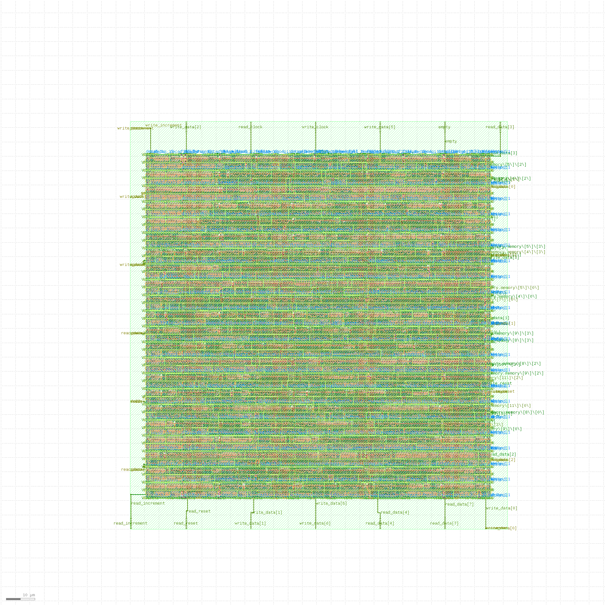
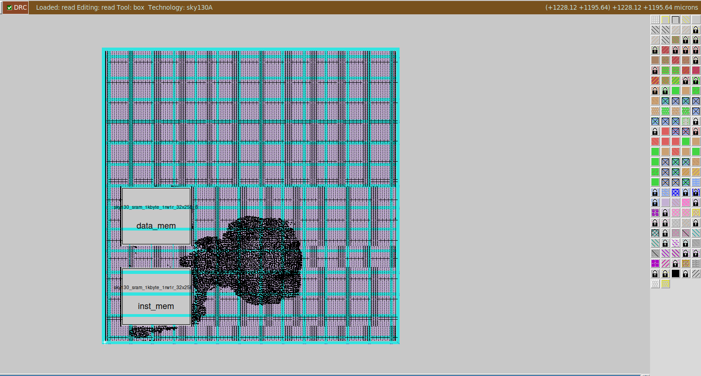
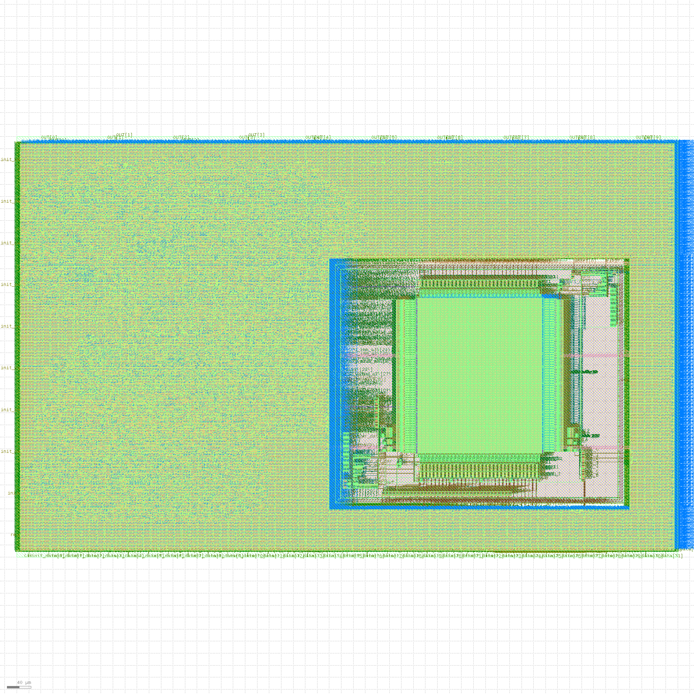

VLSI engineer with a Master's in Microelectronics from Liverpool John Moores University. Re-entered the field following the availability of open-source PDKs (Sky130, IHP), building deep hands-on expertise across the complete IC design stack — RTL design, synthesis, physical design, static timing analysis, analog circuit design, and silicon tapeout. Projects span both digital and analog domains, including a real silicon tapeout via TinyTapeout, PLL & VCO design using eSim with IHP PDK integration, and multiple RISC-V SoC implementations — a breadth rare among individual contributors.
Projects spanning every major stage of the IC design flow — from specification to silicon
Physical design outputs — from floorplan DEF to final GDSII — one taped out to real silicon



12 public repositories covering the full VLSI design stack
Recorded walkthroughs of three key projects
Completed the FOSSEE Winter Internship at IIT Bombay, working on the design and simulation of a Phase-Locked Loop circuit using eSim — an open-source EDA tool developed under the Ministry of Education's FOSSEE initiative. Additionally integrated the IHP sg13g2 PDK into eSim and designed a current-starved ring oscillator VCO producing 1 GHz output at 3.3 V as part of the eSim Marathon. Work available at fossee.in/winter-internship/2025.
Designed and simulated Phase-Locked Loop circuit blocks using the Sky130 PDK and open-source tools (xschem, ngspice). Demonstrated exceptional skills in circuit design, problem-solving, and effective use of open-source EDA tools. Repo: PLL_130nm
Built a 3-layer hardware neural network accelerator with custom activation logic, weight storage, and configurable datapaths supporting runtime model swapping via UART. Organised by NIT Jamshedpur in collaboration with VLSI FOR ALL Pvt Ltd as a tribute to Sir Ratan Tata. Repo: Hardware_Neural_Network_Accelerator
An avid reader across science, technology, biography, and literature